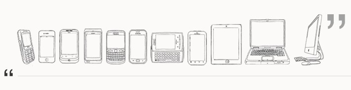
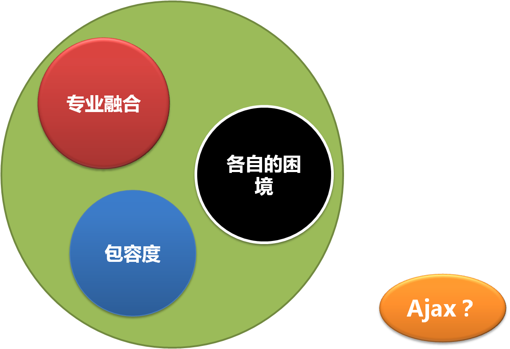

Responsive Web
观 - 岑安
说在前面的话
- “单终端响应”，意义？
- Mobile - Resize? No!
- So? phone > pad > pc

Topic List
- 关于响应式
- Design or Development
- 基于Media Query
- 从Mobile走向PC
- 体验一致性的响应
- 响应一体化
关于响应式
- What
- Why
- How
- 演化方向
- 实现方式
Design or Development
从Mobile走向PC
- 有区别吗？
- Mobile端的 resize？
- 数据的冗余和分发
- How@OPOA的形态
- How@server吐页面
- 从“小而简”开始做起 For Example
体验一致性的响应
顾名思义: 主要工作在不支持 Media Queries 的响应